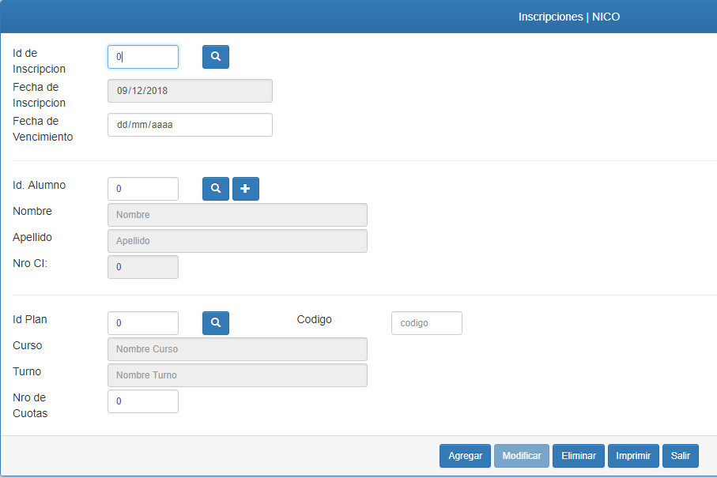
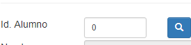
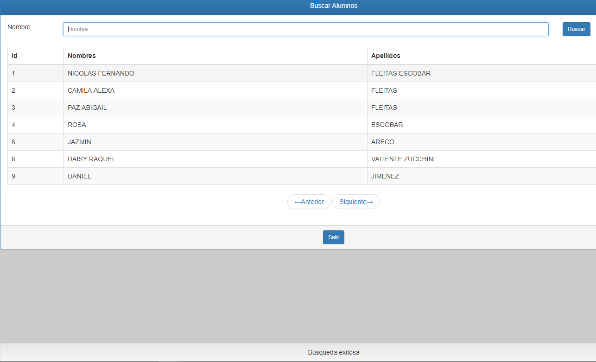
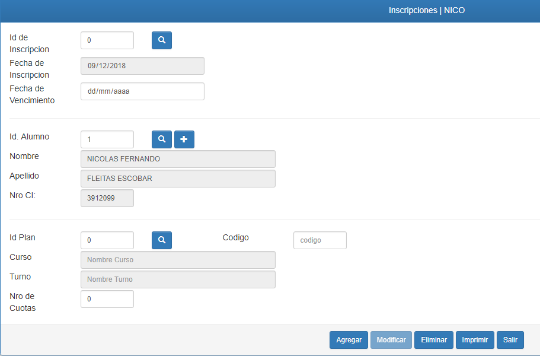
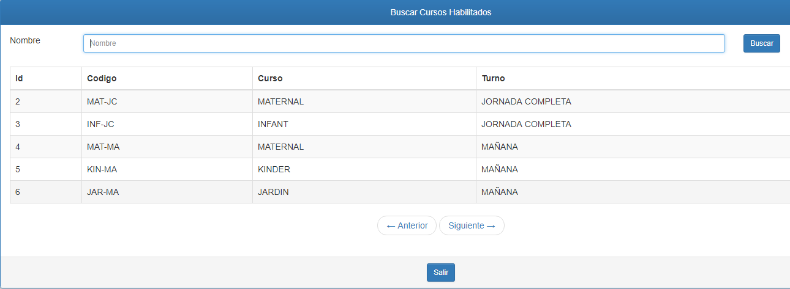
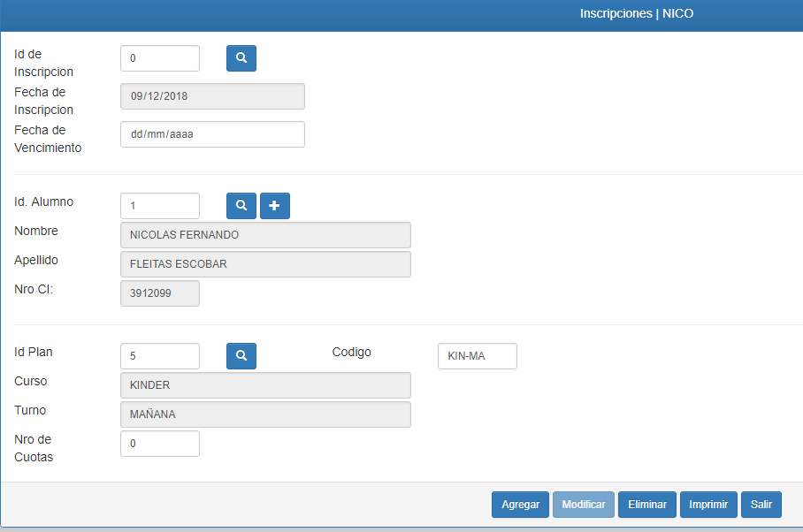
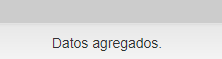
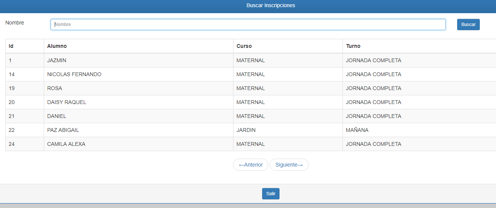
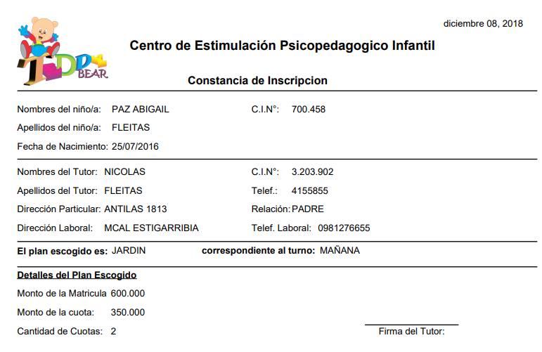

Inscripciones
Este es el formulario para realizar las inscripciones de los alumnos.

Como podrá observar al ingresar al formulario, el campo de la fecha de inscripción se autocompleta, esto con el fin de evitar errores al registrar la fecha de la inscripcion.
Para realizar una nueva inscripción, deberá seleccionar al alumno, tocando en el boton buscador del mismo. El boton de buscar tiene el ícono de una lupa.

Se desplegará una lista con los datos de los alumnos registrados

En la pantalla de buscar alumnos, podra buscar por nombre del mismo, en el campo NOMBRE, y presionando el boton buscar para filtrar.
Luego deberá tocar la fila en la que este el alumno que desea inscribir y este cargara los datos del alumno seleccionado en el formulario de inscripción.

En caso de que el alumno no este registrado, podra registrarlo yendo al formulario de alumnos con el boton de simbolo
Para continuar con la inscripcíón debe agregar el plan al que desea realizarse la inscripción del niño/a
Estos planes están predefenidos de antemano para cada año.
Puede realizar la busqueda del mismo utilizando el botón buscador de planes, ( el botón con icono de lupa en el apartado de planes)
O puede realizar la busqueda manualmente si conoce el codigo interno del plan.

Al seleccionar el plan se cargará los datos del mismo.

Por último para completar el proceso solo debe indicar la cantidad y fecha de vencimiento para las cuotas, que corresponden al plan que se eligio.
Tocando el boton Agregar se queda registrado los datos de la nueva inscripcion, que será indicado con un mensaje de "Datos agregados" en la barra de mensajes, que es la barra inferior de color gris
.
Puede comprobar la inscripción que acaba de registrar tocando el botón de buscar inscripciones, que se encuentra en el apartado de inscripciones, con el icono de una lupa.

Se desplegará una lista de todos los alumnos inscriptos, donde podrá utilizar el buscador por nombre de alumno. En caso de que necesite información sobre alguna inscripcion específica o necesite imprimir nuevamente la constancia de inscripción.
Para imprimir la constancia de inscripcíón solo debe tocar el boton de IMPRIMIR. y el sistema emitirá un informe con los datos correspondientes a la inscripción que previamente ha seleccionado.

Este documento es utilizado para la firma del tutor, luego de verificar que todos los datos son correctos.
Created with the Personal Edition of HelpNDoc: Free EPub and documentation generator